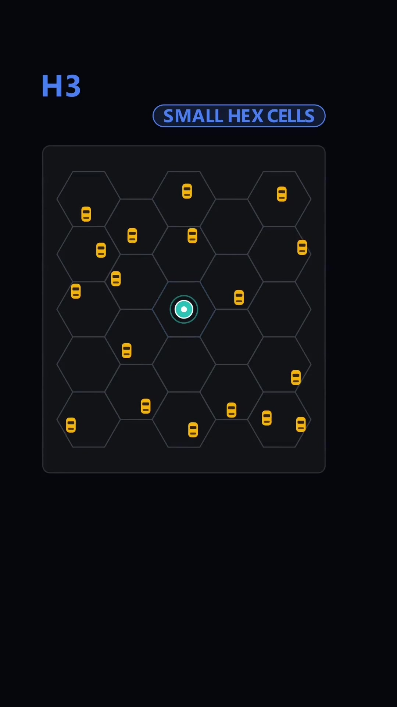
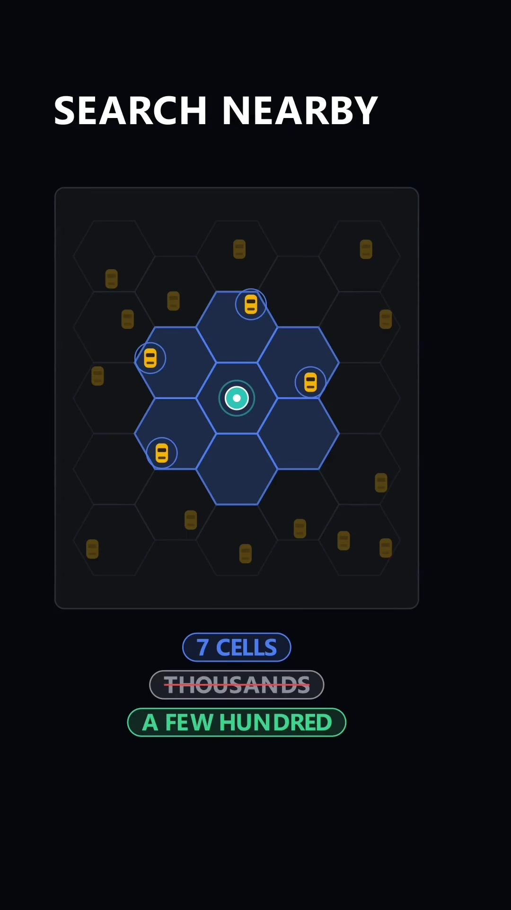
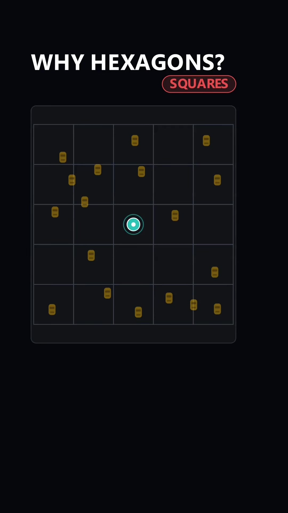
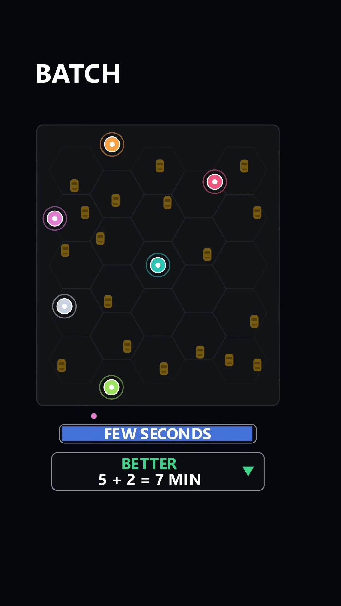

Executive Summary
When a rider requests an Uber, the dispatch engine returns a matched driver within seconds. Behind this interaction lies a massive distributed engineering challenge: across a dense metropolitan area, tens of thousands of active drivers broadcast high-frequency GPS pings every 4 seconds, while thousands of riders request pickups concurrently.
A naive brute-force search calculating Euclidean distances across all drivers requires $O(N \times M)$ floating-point distance calculations per second—instantly melting database CPU. Furthermore, greedy matching (assigning the nearest driver to the first requester) creates severe global inefficiencies. Uber solves this through a two-tier architecture: Uber H3 Hexagonal Spatial Indexing for sub-millisecond candidate filtering, followed by Windowed Batch Bipartite Matching for global wait-time optimization.
Core Visual Demonstrations




The Architecture: From GPS Pings to Optimal Match
1. The Spatial Partitioning Engine: Uber H3
Instead of indexing floating-point coordinates (latitude/longitude) in relational B-Trees or complex R-Trees, Uber developed and open-sourced H3—a discrete global grid system that partitions the surface of the Earth into hierarchical hexagons.
- Every driver's 4-second GPS update is mapped directly to a 64-bit integer H3 cell ID.
- Driver lookups in memory become instantaneous $O(1)$ hash-map or Redis set reads:
GET drivers:hex_id.
2. Why Hexagons Beat Squares and Triangles
In a Cartesian square grid, each cell has two distinct types of neighbors:
- 4 orthogonal neighbors at center distance $d$.
- 4 diagonal neighbors at center distance $d\sqrt{2}$ (~1.414$d$).
This disparity introduces severe directional bias during radial searches. Hexagons, by geometric contrast, possess exact 6-fold radial symmetry: all 6 adjacent neighbors are strictly equidistant from the center cell. This property enables consistent radial expansion ($k$-rings):
k = 0: 1 cell (rider's immediate hex)
k = 1: 1 + 6 = 7 cells (immediate neighbors)
k = 2: 7 + 12 = 19 cells (extended search radius)3. Candidate Pruning: Euclidean vs Road Graph ETA
While H3 enables instant retrieval of all drivers within a 2-ring radius (~2 km), straight-line Euclidean distance is misleading in urban terrain. Rivers, railway lines, one-way streets, and highway dividers mean a driver located 300 meters away as the crow flies might require a 15-minute U-turn.
Uber uses fast routing engines (contraction hierarchies over OpenStreetMap road networks) to calculate true traffic-adjusted ETA only for the pruned subset of candidates extracted from the H3 index.
4. The Batching Window: Solving Global Bipartite Matching
The Greedy Matching Flaw: If rider Alice requests a ride at $T=0$, and her closest driver is Bob (4 mins away), a greedy system matches Alice with Bob immediately. Ten seconds later ($T=10s$), rider John requests a ride nearby. Bob was John's only close option (2 mins away); with Bob taken, John is matched to a driver 15 minutes away. Total system wait time = $4 + 15 = 19$ minutes.
The Batch Optimization Solution: Uber buffers ride requests in small time windows (e.g., 5 to 10 seconds). The dispatch engine models the dispatch pool as a weighted bipartite graph:
Riders {Alice, John} <--- Weighted Edges (ETA) ---> Drivers {Bob, Charlie}
Match Option A (Greedy):
Alice -> Bob (4m)
John -> Charlie (15m)
Total Wait Time = 19 minutes
Match Option B (Global Optimum):
Alice -> Charlie (5m)
John -> Bob (2m)
Total Wait Time = 7 minutes (63% reduction!)By solving the assignment problem (using the Hungarian algorithm or min-cost max-flow formulations) over batch windows, the system minimizes aggregate wait time, maximizes driver fleet utilization, and stabilizes surge dynamics.